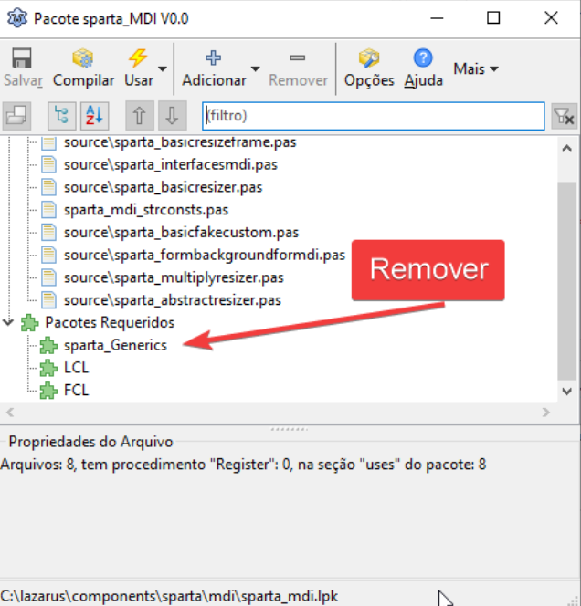

O pacote sparta é um pacote necessário para docar o editor de código e formulário numa única area de trabalho.
O pacote sparta foi descontinuado a partir da versão 2.2, mas se ainda precisa utilizá-lo, saiba que é possivel desde que corrija um bug que impede a sua instalação/compilação.
Primeiro você deve determinar onde o seu lazarus está instalado, pois você precisará corrigir diretamente os fontes desse pacote. No Lazarus, vá em Package|Open Package(.lpk) e abra os seguintes pacotes:
Depois procure a seção Required Packages(pacotes requeridos) e remova deles a referencia sparta_Generics:

ALERTA: Essa é uma alteração necessária apenas para o Lazarus 2.0.12, não serve para as versões posteriores onde tal pacote foi substituído pelo dockedformeditor.